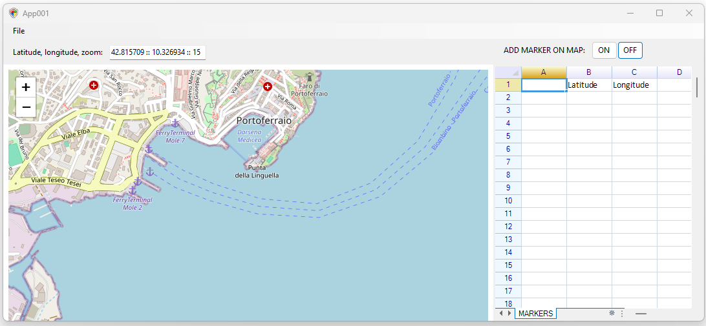
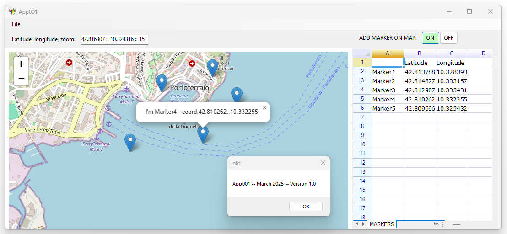

Scrivi Codice Python ed eseguilo tramite PyScript, ovvero
Mostra le variabili dichiarate o stampa a video i relativi valori all'interno della Console ...
Dopo aver creato un WinForm .NET project (in C#) ed aver preparato la relativa WebView2 oltre al componente ReoGrid - .NET Spreadsheet (anche mediante l'utilizzo del relativo pacchetto NuGet), l'Applicazione in questione utilizza una pagina HTML mediante la quale richiamare le funzioni ed i Marker della Libreria Leaflet (Javascript). Le coordinate di inserimento dei Marker saranno poi elencate nel foglio disposto a lato dell'Applicazione. In questo contesto la comunicazione tra C# e Javascript viene assicurata tramite l'istruzione webView21.ExecuteScriptAsync e dalle istruzioni chrome.webview.postMessage. La gestione degli handlers / eventi è definita partendo dall'evento WinForm Load, attraverso espressioni come webView21.NavigationCompleted += (,_ args) => {...}. Link alle immagini di esempio:
 | Rosso: | |
| Verde: | |
| Blu: | |
| Alpha (trasparenza): |